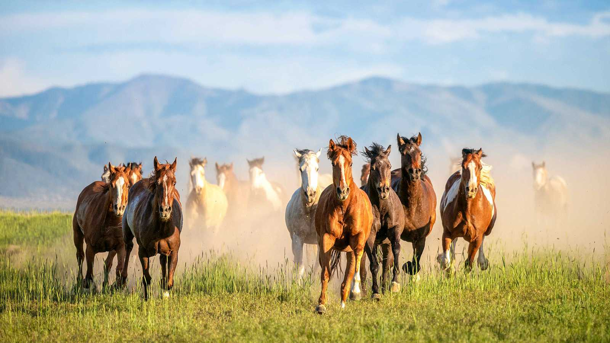

La creación de la raza Azteca empezó en 1969 en alta Escuela Mexicana de jinetes de Texcoco, en la región del Valle de México para ser utilizado como montura por los charros de ese país, que lo aprecian justamente por su alzada cómoda, su rapidez, fuerza, temperamento adecuado, nobleza y buena estampa. Es una raza relativamente nueva pero bien conformada; la raza azteca tiene sangre andaluza y cuarto de milla, conformando buena estampa, aires especiales, fuerza y versatilidad. Su aspecto era poco alentador en sus comienzos pero fue mejorando en gran medida mediante cruces. Hoy en día está adquiriendo gran popularidad y se está criando en Canadá, Estados Unidos (donde también lo llaman half-andalusian), centro y sur américa. Procedencia: El Azteca fue creado a partir del semental andaluz Hilandero nacido en Jerez de la Frontera España, y de una yegua cuarto de milla norteamericana. El primer semental azteca de nombre Casarejo fue progenitor de esta raza y actualmente la mayoría de los Aztecas tienen su sangre. La cruza y entrecruza del andaluz, cuarto de milla y azteca ha conformado la raza que goza de intensa demanda como caballo de silla para diversas disciplinas como la charrería, el rejoneo y alta escuela. Características: Las características que reúne esta raza equina destinada en primer término para satisfacer plenamente los requerimientos del deporte nacional mexicano (la charrería): una alzada cómoda, un caballo rápido, fuerza, temperamento adecuado, noble y buena estampa. Caballistas mexicanos, con el apoyo de expertos en zootecnia y genética analizaron diversas opciones de cruzamiento y se consideró que aquel valioso intento debía iniciarse cruzando caballos andaluces de purasangre y yeguas cuarto de milla. El semental andaluz por su gran estampa, aires especiales, espectaculares movimientos y singular belleza y la yegua cuarto de milla con fuerza y versatilidad. El Azteca es un caballo muy bien logrado que engloba estas características. Historia: Los primeros caballos que llegaron a México fueron los que trajeron los españoles durante la conquista en el siglo XVI, dando lugar al caballo “criollo” mexicano, un caballo muy similar a los mustang norteamericanos y a los criollos suramericanos. Lamentablemente al estallar en México la Revolución de 1910, los criollos mexicanos desaparecieron por completo en diez años de guerra, ya que eran lo primero que se llevaban los revolucionarios para utilizarlos en los campos de combate. Por lo que a partir de 1920, terminado el movimiento armado, vino a sustituirlo en gran medida el caballo de origen estadounidense conocido como cuarto de milla, convirtiéndose en la población equina mayoritaria y dejando a México sin un caballo con identidad propia. Fue hasta 1969 con la visionaria idea de un caballista, Antonio Ariza, y el apoyo del gobierno mexicano de que México tuviera, al fin, una raza equina propia, como la tienen los países árabes, España, Inglaterra, Estados Unidos y otros más, que se empezó a criar el caballo Azteca. Capa: El Azteca ostenta toda clase de capas, predominando los castaños y los tordos. Alzada: La alzada ideal oscila entre los 150 y 155 cm.
En Gran Bretaña el caballo Pura Sangre es apreciado como ejemplar de carreras. Existe toda clase de razas que están dedicadas a este tipo de competiciones, aunque en los hipódromos son los caballos Pura Sangre los auténticos y principales ganadores. Se construyó en Inglaterra, (Newmarket) el primer hipódromo en donde se establecieron las primeras reglas y los premios de este deporte. Procedencia: Esta raza se creó en Inglaterra desde que el rey Enrique VIII fue monarca. De ahí en adelante su descendencia tuvo caballerizas reales, en las que los caballos de carreras lograron su procedencia mediante cruces de animales que trajeron de Arabia, Italia y de España, posteriormente reforzando la sangre de las crías mediante sangre oriental. Características: El caballo Pura Sangre posee temperamento de gran energía mental y física, es valiente, no rehuye la lucha de tal modo que es sensible y nervioso. Tiene ojos expresivos y grandes. La cabeza es hermosa, bien dibujada; es de piel fina. Por otra parte la acción es uniforme, económica y larga. Historia: En el año de 1728 los caballos Pura Sangre constituyeron una de las razas equinas más apreciadas e influyentes en el Mundo. La rama de Marchem procede de Godolphin. El Pura Sangre se deriva de raíces árabes con sangre de yeguas de las islas Británicas. Provienen de tres líneas: el Byerley Turk, el Darley Arabian y el Godolphin Arabian. Del primero se tiene entendido que fue capturado en el año de 1690 en la batalla de Buda del Boyne por Robert Byerley. En el año de 1704 nació Darley Arabian, en Aleppo. Fue el padre del primer caballo de carreras (Flying Childers), el fundador de la rama Eclipse. Capa: Cabe mencionar que el pelaje del Pura Sangre se extiende por el cuerpo a su cobertura y los colores característicos son el prieto, tordillo, ruano, alazán, colorado y retinto. Alzada: En el Pura Sangre la alzada media oscila entre los 160 cm y 165 cm.
CloseEl temperamento tranquilo y su presencia convierten al Frisón en un animal perfecto para el tiro. Es un descendiente del arcaico caballo de los bosques de Europa del Norte, criado principalmente en Frise, al norte de los países bajos. También ha sido empleado en el circo a consecuencia de su pelaje negro, su majestuosidad y su talla impresionante. Antiguamente fue el caballo de guerra de los alemanes, el cual ha ido mejorando mediante diversos cruces, en especial con los caballos andaluces. Los lugares en que es más apreciado es en Holanda y Bélgica. Procedencia: El Frisón desciende de los primitivos caballos de los bosques Europeos y hoy en día se cría en la comarca holandesa de Friesland, rodeada por mar, donde es muy apreciado y admirado. Resulta ser un caballo muy equilibrado, a esto se debe que ocupe un sitio preferente en la historia de las razas equinas y del ser humano. Características: La cola y la crin del Frisón suele ser espesa y abundante, a veces pueden o no estar ambas trenzadas o algo onduladas. De la cabeza podemos decir que es bastante larga y está provista de orejas pequeñas, que siempre están erguidas y elegantes, características de su gran docilidad y excelente temperamento. Historia: El Frisón influye en el gran caballo inglés, el hoy llamado Shire a través de un derivado suyo, el Antiguo Inglés negro así como en el Dale Gudbrandsdal noruego.Los antiguos romanos ya conocían al Frisón y lo consideraron un animal poderoso de trabajo, a pesar de que no lo juzgaban demasiado hermoso. Mil años más tarde habría de mejorar su aspecto y demostrar su utilidad como caballo fuerte, dócil y resistente, apto para tareas muy diversas, sirviendo de transporte y más adelante tomaría parte en las Cruzadas. Capa: El Frisón siempre es negro. Alzada: La alzada ideal del Frisón oscila entre los 150 y 155 cm.
CloseLos enormes brabantes alcanzan una altura media de 158 a 175 centímetros y un peso de 700 a 1200 kilogramos. El exterior del brabante es una expresión pura de fuerza que no solo llama la atención de los entendidos en caballos: tanto la base como el cuello y las extremidades son cortos y fuertes; la espalda y el pecho están visiblemente bien musculados. La grupa del caballo Brabante es típicamente inclinada y redonda. La cabeza de esta raza de caballos es más bien pequeña y se caracteriza por una frente ancha, orejas pequeñas y una doble crin. Los caballos llevan una raya central y ambos lados del cuello están cubiertos por la crin. La cola de estos imponentes caballos de sangre fría es más bien baja y sus fuertes patas están adornadas con un exuberante pelaje. Los enormes brabantes alcanzan una altura media de 158 a 175 centímetros y un peso de 700 a 1200 kilogramos. El exterior del brabante es una expresión pura de fuerza que no solo llama la atención de los entendidos en caballos: tanto la base como el cuello y las extremidades son cortos y fuertes; la espalda y el pecho están visiblemente bien musculados. La grupa del caballo Brabante es típicamente inclinada y redonda. La cabeza de esta raza de caballos es más bien pequeña y se caracteriza por una frente ancha, orejas pequeñas y una doble crin. Los caballos llevan una raya central y ambos lados del cuello están cubiertos por la crin. La cola de estos imponentes caballos de sangre fría es más bien baja y sus fuertes patas están adornadas con un exuberante pelaje. Con su enorme complexión, los brabantes pueden irradiar una enorme autoridad. Pero detrás de esa impresionante fachada se esconde un carácter tranquilo, bondadoso y extraordinariamente apacible. El caballo de Brabante es siempre amable y mantiene la compostura en muchas situaciones. Cualquiera que pase algún tiempo con estos corteses gigantes aprenderá rápidamente a apreciar su obediencia y fiabilidad. Gracias a estas cualidades, los brabantes son muy motivados y dispuestos a aprender, y también muestran una fuerte voluntad de rendimiento.
CloseCalificados médicos veterinarios y conocidos criadores a nivel mundial no han dudado en asegurar que el caballo de raza “Cuarto de Milla”, es actualmente el mejor atleta ecuestre. Combina las sangres del Pura Sangre inglés y del Mustang salvaje. Criado por los “cowboys” estadounidenses desde el siglo XVIII, está considerado como el caballo más versátil del Mundo. Procedencia : El Cuarto de Milla trae la carga genética propia de un caballo atlético, muy bien balanceado en sus características de altura, longitud y profundidad. Es una raza conformada por los Pura Sangre ingleses, caballos traídos a Estados Unidos durante la colonia inglesa en América durante el siglo XVII, y el Mustang americano, caballo salvaje descendiente de los caballos traídos por los españoles en la conquista americana un siglo anterior. Características : Desde la cabeza a las patas; y su constitución muscular, y tendones revelan un animal hecho por la naturaleza para exigencias atléticas de velocidad, resistencia, fuerza y flexibilidad. De hocico fino; ubicación de los ojos; amplitud de los ollares; la longitud y musculación de su cuello; su proporción corporal exacta, calidad de sus cascos, 100 % funcionales y motivo por el cual presentan los más altos rendimientos. Condición sicológica de muy buen genio, rápido aprendizaje y alto sentido vaquero. Para este tipo de caballo los vacunos no constituyen un enemigo natural ni un animal extraño y por lo cual son capaces de entablar una buena relación de especies. Son los caballos atletas más mansos que se conocen. Podrá haber otros ejemplares más mansos aún, pero que no sirven para trabajos deportivos o recreativos, que es lo que el hombre busca en su asociación con estos animales. Capa: Se admiten todas las capas. Alzada: Oscila entre 148 y 155 cm.
CloseEl caballo de raza árabe (حصان عربي) debe su reputación a su inteligencia, carácter fuerte y resistencia sobresaliente. Con una cabeza característica y la cola siempre en alto, el caballo árabe es una de las razas de caballos mejor reconocidas en el mundo. Es una de las razas de caballo más antiguas, ya que hay evidencia arqueológica de hace 4500 años de caballos muy similares a los árabes modernos. En el transcurso de la historia, los caballos árabes del Medio Oriente se esparcieron por el mundo gracias al comercio y las guerras. También fueron muy usados para mejorar otras razas al añadir velocidad, refinamiento, resistencia y buena estructura ósea. Hoy día, las líneas árabes se pueden encontrar en casi cada raza moderna de caballos para montar. Los caballos árabes se desarrollaron en un clima desértico y eran valorados por los nómadas beduinos, quienes frecuentemente los alojaban dentro de sus tiendas para cubrirlos y protegerlos. Esta relación cercana con los humanos creó una raza de caballo con buena disposición, rápido para aprender, y dispuesto a complacer. Pero el caballo árabe también desarrolló el carácter fuerte y el estado alerta necesario en un caballo usado para los asaltos de las guerras. Esta combinación de disposición y sensibilidad requiere que los dueños modernos de caballos árabes traten sus caballos con respeto y mucha habilidad. "El polifacético árabe" es el lema de la raza. Los caballos árabes compiten hoy en muchos campos de actividad ecuestres, lo que los hace una de las diez razas de caballo más populares en el mundo y a su vez el equino con las mejores características físicas del mundo. Los caballos árabes hoy se pueden encontrar en todo el mundo, incluyendo Polonia, Estados Unidos, Canadá, el Reino Unido, Australia, México, República Dominicana, Europa continental, Sudamérica (especialmente Brasil y Chile), y en su tierra de origen, el Medio Oriente. Los caballos árabes tienen una cabeza en forma de cuña y bien refinada, frente amplia, ojos grandes, fosas nasales grandes y hocicos pequeños. La mayoría despliega un perfil distintivamente cóncavo. Muchos caballos árabes también tienen un pequeño aumento en la frente entre los ojos, llamado "jibbah" por los beduinos, que añade más capacidad en los senos paranasales. Se cree que esto les sirvió en su natal clima seco del desierto. Hay muchas razas de caballos Árabes, y se supone que los antepasados originales de todos los purasangres árabes son los árabes del tipo Kuhaylan, y a partir de este tronco único, se van desarrollando todas las líneas. Estos caballos son los que tienen menos huesos ya que tienen una costilla, un hueso lumbar y dos vértebras menos que los demás caballos. La tradición árabe indica que el profeta Mahoma que tras acampar junto a un río, mandó encerrar una manada de caballos en una cueva, donde los tuvo siete días sin beber. Luego, ordenó soltar a los animales, que corrieron hacia el agua. El profeta los llamó, los corceles le ignoraron y se lanzaron a saciar su sed, sin embargo cinco yeguas volvieron y acudieron a la llamada de su amo. El profeta, feliz, bendijo a las yeguas y las bautizó: Kuhayla (que significa fuerza), Saqlaui (belleza) y Muniqui (rapidez). Las otras, Hamdani y Habdan, eran hijas de las dos primeras y según la tradición, los purasangre árabes descienden solamente de estos animales. Actualmente se aceptan tres líneas principales y se distinguen cada una por una característica peculiar y típica. El tipo Kuhaylan es la fuerza, el Saqlaui es la belleza y el Muniqui es la velocidad. Luego hay líneas, sublíneas y familias hasta un total de unas doscientas cuarenta. Otras características distintivas son su trasero relativamente largo y nivelado y su cola en alto. Los caballos árabes de buen linaje poseen caderas profundas y bien anguladas, y hombros con buena caída. La mayoría tienen cuerpos compactos con espaldas cortas. Algunos, y no todos, tienen 5 vértebras lumbares en vez de las usuales 6, y 17 pares de costillas en vez de 18. Así, un caballo árabe puede cargar un jinete pesado con facilidad, aunque sea pequeño. Los caballos árabes normalmente poseen huesos fuertes y densos, patas fuertes y buenas paredes en los cascos. Se les prefiere especialmente por su aguante. Los caballos árabes tienen balance natural, agilidad y empuje, cualidades originalmente esenciales para un caballo de guerra en el desierto, y que hoy se ven en varias disciplinas competitivas. Gracias a la ausencia de su última vértebra el caballo árabe puede levantar de esta manera su cola dándole un porte majestuoso y altanero. Los caballos árabes poseen un carácter activo y animoso; son caballos veloces, ágiles, y resistentes.
CloseEl caballo andaluz es una raza de caballo originaria de Andalucía. Se trata de un caballo ibérico de tipo barroco que está entre las razas equinas más antiguas del mundo. En España también se le conoce comúnmente como "caballo español" y se le denomina oficialmente Pura Raza Española (PRE), porque se considera que el andaluz es el caballo español por antonomasia, a pesar de que existen muchas otras razas equinas españolas. Sin embargo en la mayoría de países recibe el nombre de "caballo andaluz". El caballo cartujano es una de las líneas de cría más importantes de esta raza. A lo largo de la historia el caballo andaluz ha tenido un papel fundamental en la formación de razas equinas europeas y americanas, como el caballo hispano-árabe, hispano-bretón,el frisón, el azteca, el lipizzano, el kladruber, el peruano de paso, el mustang, el Alter Real y el lusitano. Historia Desde la Antigüedad los caballos de la Bética fueron muy apreciados en el circo romano y han tenido gran fama. En la Edad Media, en la actual Andalucía había tantos caballos que Abderramán I, el año 780, otorgaba seguro y paz a los mozárabes granadinos mediante un pacto, que les obligaba a pagar anualmente 10 000 onzas de oro, 10 000 libras de plata, 10 000 cabezas de los mejores caballos. Durante el Califato de Córdoba fue muy importante la yeguada de la corte de los omeyas, así como la yeguada de Almanzor y sus jinetes bereberes. Se tiene noticia de la yeguada del califa Alhakén gracias a la crónica en la que Ziyad Ibn Aflah, caballerizo del califa y zalmedina de Medina Azahara, ensalza la calidad de los potros que anualmente se concentraban en la almunia Amiriya, procedentes del destete de las más de 3000 yeguas que tenía el califa en las marismas, junto a 500 sementales, en un claro paralelo con la posterior Saca de las Yeguas. Dada la calidad de los caballos del sur de la península ibérica, desde el siglo xiii hasta el XIX los reyes establecieron la prohibición de cruzar las yeguas con asnos, en Andalucía, Extremadura y Murcia, estableciendo una "raya real" al sur de la cual estaba prohibido el mestizaje de los équidos, para preservar su pureza. El Reino de Córdoba fue especialmente célebre por sus caballos. En él hubo dos linajes dedicados a la cría caballar. Los Mexía, señores y luego condes de Santa Eufemia, fueron famosos ganaderos desde el reinado de los Reyes Católicos, destacando en la cría de caballos tordos. Don Rodrigo Mexía el Viejo proveyó de caballos al rey Carlos I entre 1520 y 1530 y enseñó por mandato real a los gobernadores de Castilla su sistema de cría aprendido de su padre Don Gonzalo. Por otro lado fueron renombrados los caballos "guzmanes" o "valenzuelas", que tuvieron su origen en un semental bereber que compró Luis Manrique, de la Orden de Calatrava en Córdoba, a un tal Guzmán. A la muerte de Manrique, sus caballos pasaron por las manos de Martín Fernández de Córdoba Ponce de León, nieto del Conde de Cabra, quien regaló la piara al Gran Capitán que, a su vez, la dejó a Juan Valenzuela, en cuya familia permaneció hasta ser adquirida por Luis Gómez de Figueroa. Esta yeguada decayó irreparablemente durante la Guerra de la Independencia. De esta línea de cría poseyeron caballos el duque de Osuna, el duque de Arcos, el conde de Medellín y el duque de Medinaceli, entre otros magnates.
CloseEl Mustang ha dado origen a innumerables razas norteamericanas, tienen los rasgos de los caballos españoles en especial lo relativo al color. El nombre de esta raza se deriva del español “mesteño”, que se relaciona con las manadas de caballos salvajes del Oeste de Norteamérica ya que fue la montura de los indios pieles rojas, así también como la de los estadounidenses blancos en preferencia a los criollos del sur del continente. Procedencia: Fue en el siglo XIX cuando los conquistadores españoles llegaron a América trayendo con ellos caballos y ganado vacuno que dieron origen a la industria ganadera. Características: El Mustang tiene una apariencia atlética y de gran equilibrio con aspecto español, además de poseer un perfil clásico con cuello grueso y crin abundante igual a la del caballo moderno, por lo tanto es más atractivo que el antiguo que tenía la cabeza demasiado pesada. Por otra parte los cascos no son herrados por ser duros y resistentes lo que les ayuda a desplazarse sin dañar sus cascos sobre terrenos abruptos. Historia: Después de la desaparición de los mayas y los aztecas, cuando los españoles se establecieron en América, hubo caballos españoles que escaparon para así convertirse en estado salvaje, lo que constituyó el auge de estas manadas que se extendieron desde México hasta las llanuras del Oeste norteamericano. Por lo que a principios de siglo XX existían en los Estado de la Unión un millón de ejemplares; en la actualidad se ha intentado protegerlos. Capas: Cuenta con todas las capas equinas. Alzada: La alzada ideal del Mustang oscila entre los 135 y 150 cm.
CloseEl caballo Morgan tiene su origen poco después de la fundación y constitución de Estados Unidos como país. Hablamos de 1789, año en el que nace ‘Figura’, el semental de esta raza. Figura era un caballo que destacaba por sus increíbles cualidades y que, paradójicamente, no se sabe con exactitud cuál fue su origen. Hay numerosas teorías al respecto, pero ninguna lo suficientemente contrastada para que se tome por oficial. Entre las razas que se han comentado de las que podría descender el caballo Morgan y ‘Figura’ se encuentran los Purasangre, ya que se dice que fue engendrado por True Briton –un afamado Purasangre- ; otras opciones son el caballo frisó o el Cob Galés. Como decíamos, hay numerosas teorías sobre el nacimiento de ‘Figura’, pero ninguna de ellas certificada. Lo único cierto es que era un caballo que destacaba por sus increíbles cualidades. Se distinguía por su temperamento, complexión más reducida que otros caballos americanos y sus excelentes características atléticas. Es decir, el modelo del caballo ligero que conocemos hoy en día. Para hacer un repaso por su vida, ‘Figura’ nació en Masachussetts, aunque la mayor parte de su vida la vivió en Vermont. Rápidamente, comenzó a ser un caballo muy reconocido, que destacó por su trabajo al despejar la tierra para el establecimiento de nuevos colonos. Sus habilidades en el paso, trote y galope, en el que superaba al resto de razas, hicieron que se convirtiera en una referencia a nivel nacional hasta su muerte, a los 32 años de edad. ¿Y a qué se debe el nombre de Morgan? A los tres años de edad, ‘Figura’ fue cedido a Justin Morgan, como pago de una deuda de su anterior propietario. Siguiendo con los paralelismos entre el caballo Morgan y la fundación de los Estados Unidos, nos tenemos que detener en los descendientes de Figura y en uno de ellos especialmente: ‘Sherman’. A través del linaje de ‘Sherman’ y su hijo y nieto, ‘Black Hawk’ y ‘Ethen Allien’, se desarrollaron otras razas muy características de los Estados Unidos. Hablamos del Saddlebred Americano; el caballo de silla americano, el Standardbred y el Tennesse Walking. Los posteriores descendientes de ‘Figura’ también tuvieron gran protagonismo para la creación del caballo de carreras por antonomasia: el Cuarto de Milla. Características del caballo Morgan El caballo Morgan tiene un cuerpo muy compacto. Con una estatura que va desde los 1,45 metros a los 1,57, su peso se sitúa entre 400 y 525 Kg., con una gran musculatura, y destaca por sus fuertes piernas y cuello bien arqueado. Todo ello le confiere una forma de moverse tremendamente elegante y atlética, por lo que era un caballo ideal de carreras. Además, también puede recorrer largas distancias –hasta 40Km al día-, por lo que en el Siglo XIX era muy útil para el transporte. Aunque puede haber caballos de raza Morgan de todas las capas, los más característicos son el castaño y el bayo. Su cabeza es muy expresiva y de pequeños ojos, con las orejas también pequeñas y puntiagudas. En cuanto a su carácter, todo son ventajas. Se trata de un caballo con personalidad y vigor, pero a la vez muy dócil, por lo que es prácticamente el caballo perfecto.
Close
